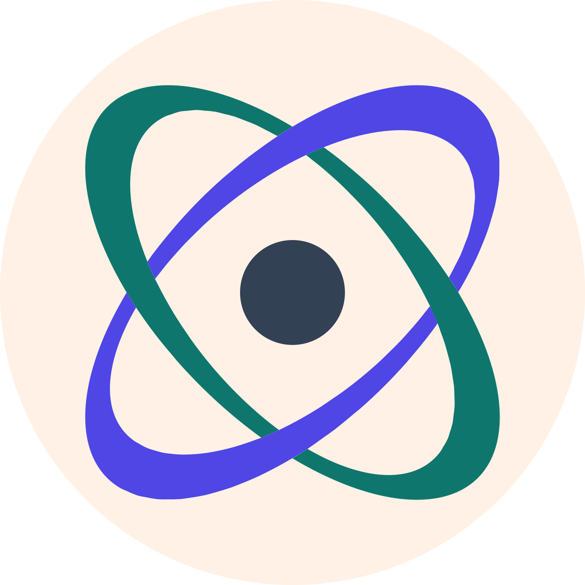

One canonical schema and data model for JSON, YAML, TOML, XML — and its own native OML and OSD languages.
A tree — an ordered list of labeled edges. An array is just a label that repeats, so the same Document represents JSON, YAML, TOML, XML, and OML.
The exact syntactical representation of the Document model: the native format with lossless serialization and deserialization.
Named record definitions — closed fields, each with a cardinality, typed as one scalar, one Ref to another record, or an explicitly marked any. Closed by default, open only where marked.
host: "api.internal" port: 8443 databases: { type: "prod" server: "db1.internal.example.com" port: 5432 } databases: { type: "test" server: "db2.internal.example.com" port: 5433 } tags: "prod" tags: "us-east"
graph LR
Root(("node")) -->|host| Host["api.internal"]
Root -->|port| Port["8443"]
Root -->|databases| D1(("node"))
Root -->|databases| D2(("node"))
Root -->|tags| T1["prod"]
Root -->|tags| T2["us-east"]
D1 -->|type| D1T["prod"]
D1 -->|server| D1S["db1.internal.example.com"]
D1 -->|port| D1P["5432"]
D2 -->|type| D2T["test"]
D2 -->|server| D2S["db2.internal.example.com"]
D2 -->|port| D2P["5433"]
This is OML — Omnist Markup Language. The two databases edges share one label — that repetition is the array; there is no separate list node.
{
"host": "api.internal",
"port": 8443,
"databases": [
{"type": "prod", "server": "db1.internal.example.com", "port": 5432},
{"type": "test", "server": "db2.internal.example.com", "port": 5433}
],
"tags": ["prod", "us-east"]
}host: api.internal
port: 8443
databases:
- type: prod
server: db1.internal.example.com
port: 5432
- type: test
server: db2.internal.example.com
port: 5433
tags:
- prod
- us-easthost = "api.internal" port = 8443 tags = ["prod", "us-east"] [[databases]] type = "prod" server = "db1.internal.example.com" port = 5432 [[databases]] type = "test" server = "db2.internal.example.com" port = 5433
<host>api.internal</host> <port>8443</port> <databases> <type>prod</type> <server>db1.internal.example.com</server> <port>5432</port> </databases> <databases> <type>test</type> <server>db2.internal.example.com</server> <port>5433</port> </databases> <tags>prod</tags> <tags>us-east</tags>
Every reader converges on the same Document — converting between any of them is just read one, write another.
record Database { "type": string, "server": string, "port": integer, } record Service { "host": string, "port": integer, "databases" [1,]: Database, "tags" [0,]: string, } root Service
graph LR
Svc(("Service")) -->|"host [1,1]"| String(("string"))
Svc -->|"port [1,1]"| Integer(("integer"))
Svc -->|"databases [1,∞)"| Db(("Database"))
Svc -->|"tags [0,∞)"| String
Db -->|"type [1,1]"| String
Db -->|"server [1,1]"| String
Db -->|"port [1,1]"| Integer
Every record is a state; a field is a labeled, cardinality-counted transition to another state. Fields are order-free, so this is a fan, not a sequence. Comparing two such automata is what makes compatible_with decidable.
compatible_with(A, B) -> bool # can readers of B still read A's documents? equivalent(A, B) -> bool # same documents, different shape? normalize(S) -> Schema # canonical minimal form extract(S, keep) -> Schema # minimal subschema for a label set infer(samples) -> Schema # learn a schema from example documents prune(S) -> Schema # drop unreachable / unsatisfiable structure
Six operations, every port implements all of them. Decidable because the schema is an automaton, not a heuristic over examples.
record Database { "type": string, "server": string, "port": integer, } record Service { "host": string, "port": integer, "databases" [1,]: Database, "tags" [0,]: string, } root Service
host: "api.internal" port: 8443 databases: { type: "prod", server: "db1.internal.example.com", port: 5432 } tags: "prod" tags: "us-east"
Every port validates this the same way, because it's the same schema, the same algebra, the same answer.
compatible_with answers "does every old document still validate?" with a proven yes or no.
Read JSON, YAML, TOML, XML, or OML into the same tree, validate against the same schema, write back to any of the others.
extract computes the minimal subschema recognizing only the labels one service keeps.
Learn OSD straight from real documents instead of writing it by hand.
any.compatible_with, equivalent, extract, infer, and normalize well-defined, decidable operations — not best-effort heuristics.omnist-spec pin.Each port is built spec-first against the same conformance suite — not a translation of another port's code.
| Language | Status | Docs |
|---|---|---|
| Python | beta, reference | py.omnist.dev |
| TypeScript | alpha | ts.omnist.dev |
| Rust | alpha | rs.omnist.dev |
| Go | alpha | go.omnist.dev |
| Java | alpha | j.omnist.dev |
omnist.dev · spec.omnist.dev · try the tutorial · github.com/omnist-dev